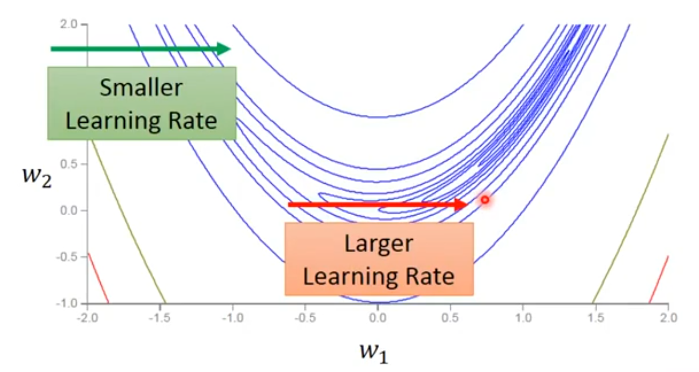

{AdaGrad}算法，如算法8.4所示，独立地适应所有模型参数的学习率，按照每个参数的梯度历史值的平方和的平方根成反比缩放每个参数。
[success]
r是向量，向量中的每一维分别用于调整对应的参数的每一维。
算法8.4
计算梯度：
累积平方梯度：
计算更新：
应用更新：
具有损失最大偏导的参数相应地有一个快速下降的学习率，而具有小偏导的参数在学习率上有相对较小的下降。
[warning] "具有损失最大偏导的参数"是什么意思？
净效果是在参数空间中更为平缓的倾斜方向会取得更大的进步。
[success]
历史g小 -> 平坦 -> lr大
历史g大 -> 陡峭 -> lr大
因为，如果g小，就应该增大lr，以保证得到足够的。
在凸优化背景中，AdaGrad 算法具有一些令人满意的理论性质。 然而，经验上已经发现，对于训练深度神经网络模型而言，从训练开始时积累梯度平方会导致有效学习率过早和过量的减小。 AdaGrad在某些深度学习模型上效果不错，但不是全部。
[success] 问：适用用于怎样的模型？
答：
如图这种情况，某个方向上的g的变化比较复杂，需要根据当前情况动态地调整学习率。
改进方法RMSProp。
Click to show
{% raw %}
\begin{algorithm}[ht]
\caption{AdaGrad算法}
\label{alg:ada_grad}
\begin{algorithmic}
\REQUIRE 全局学习率 {% math_inline %}\epsilon{% endmath_inline %}
\REQUIRE 初始参数{% math_inline %}\theta{% endmath_inline %}
\REQUIRE 小常数{% math_inline %}\delta{% endmath_inline %}，为了数值稳定大约设为{% math_inline %}10^{-7}{% endmath_inline %}
\STATE 初始化梯度累积变量{% math_inline %}r = 0{% endmath_inline %}
\WHILE{没有达到停止准则}
\STATE 从训练集中采包含{% math_inline %}m{% endmath_inline %}个样本{% math_inline %}\{ x^{(1)},\cdots, x^{(m)}\}{% endmath_inline %} 的小批量，对应目标为{% math_inline %}y^{(i)}{% endmath_inline %}。
\STATE 计算梯度： {% math_inline %}g \leftarrow
\frac{1}{m} \nabla_{\theta} \sum_i L(f(x^{(i)};\theta),y^{(i)}){% endmath_inline %}
\STATE 累积平方梯度：{% math_inline %}r \leftarrow r + g \odot g{% endmath_inline %}
\STATE 计算更新：{% math_inline %}\Delta \theta \leftarrow -
\frac{\epsilon}{\delta+ \sqrt{r}} \odotg{% endmath_inline %} \ \ （逐元素地应用除和求平方根）
\STATE 应用更新：{% math_inline %}\theta \leftarrow \theta + \Delta \theta{% endmath_inline %}
\ENDWHILE
\end{algorithmic}
\end{algorithm}
{% endraw %}